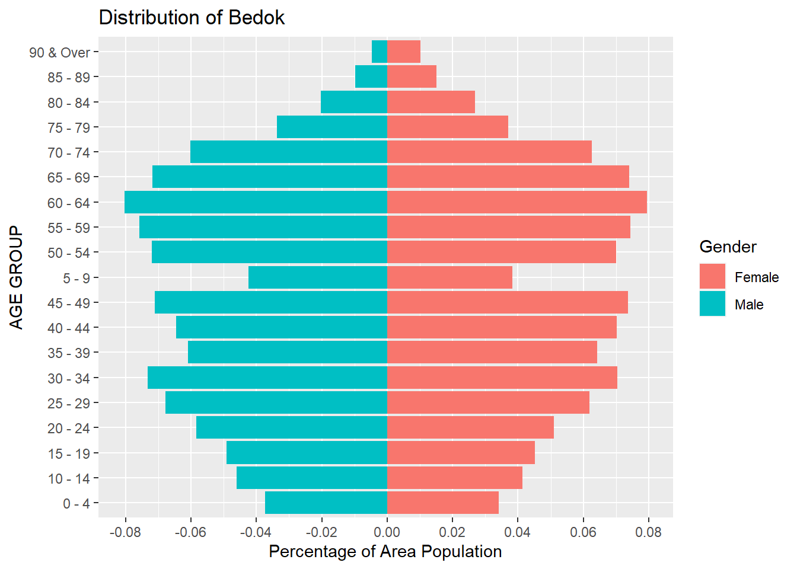
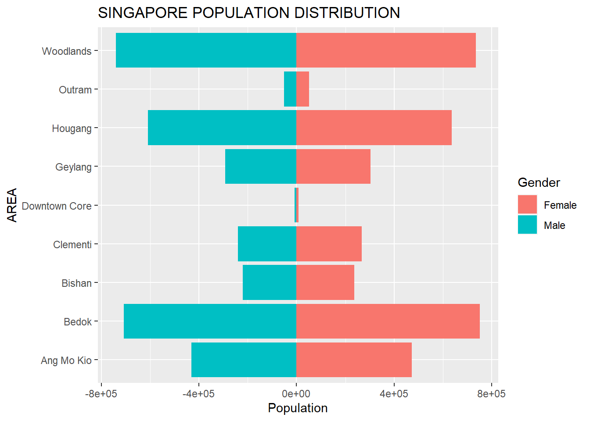

pacman::p_load(tidyverse)
pacman::p_load(readxl)Take Home 2
The Original DataViz
In the first task, we are supposed to create Age-sex Pyramid to cover 9 planning areas of Singapore in term of Male/ Female and the age group.
Below is one of the DataViz that was created by a classmate.

Original DataViz
Critiques:
Clarity: The viz was created for 9 planning areas with 9 different populations. However, they use to same absolute scales in terms of number of people. Therefore, the areas with small number of populations ( Downtown Core and Outram) when putting in the same x-axis scale as other areas, does not have high enough number of people, to show case the distributions as Age-sex pyramid.
Clarity Some age groups have data labels ( number of people in that age group), however many age groups do not have any data labels. It looks like the data label are randomly assigned.
Aesthetics Age-sex pyramid of 9 area, should not occupy such big area of spaces (taking up entire horizontal dataviz). There are other designs that can save spaces for other graphs / charts that will portray more information from the data.
Propose Designs

To address the difference in term of absolute numbers of populations in different areas, we should be converting them into percentage of each age groups versus the total population of that areas, instead keeping them on the same scale of population numbers.
Should avoid individual bar labels, as there are quite a big numbers of populations. Avoid randomly labeling and it can be quite confusing
To address the aesthetics, we can use the upper half of the dashboard to showcase all 9 age-sex pyramid of the areas, and using the other spaces for other graphs that can showcase more information from the same data.
Creating Age-sex pyramid using ggplot2
Loading the necessary package
overall_data <- read_excel("Singapore Residents by Planning Area, Subzone, Age Group, Sex and Type of Dwelling, June 2022.xlsx", sheet = "TakeHome 2 data table")
tail(overall_data)# A tibble: 6 × 6
`Row Labels` `AGE GROUP` `Sum of MALE` `Sum of FEMALE` Percentage o…¹ Percen…²
<chr> <chr> <dbl> <dbl> <dbl> <dbl>
1 Woodlands 70 - 74 23230 23830 0.0314 0.0324
2 Woodlands 75 - 79 10990 12980 0.0148 0.0177
3 Woodlands 80 - 84 6740 9550 0.00910 0.0130
4 Woodlands 85 - 89 2960 4550 0.00400 0.00619
5 Woodlands 90 & Over 1230 2490 0.00166 0.00339
6 Grand Total <NA> 3303750 3463030 NA NA
# … with abbreviated variable names ¹`Percentage of Male`,
# ²`Percentage Of Female`We want to use draw the percentage of the populations versus the Area population, so we just need to get the percentage column
overall_data = overall_data[c(1,2,5,6)]
tail(overall_data)# A tibble: 6 × 4
`Row Labels` `AGE GROUP` `Percentage of Male` `Percentage Of Female`
<chr> <chr> <dbl> <dbl>
1 Woodlands 70 - 74 0.0314 0.0324
2 Woodlands 75 - 79 0.0148 0.0177
3 Woodlands 80 - 84 0.00910 0.0130
4 Woodlands 85 - 89 0.00400 0.00619
5 Woodlands 90 & Over 0.00166 0.00339
6 Grand Total <NA> NA NA Let’s try with Area Bedok first.
Create dataframe where Rows Labels = Bedok
bedok_data = overall_data[overall_data$`Row Labels` == 'Bedok',]
tail(bedok_data)# A tibble: 6 × 4
`Row Labels` `AGE GROUP` `Percentage of Male` `Percentage Of Female`
<chr> <chr> <dbl> <dbl>
1 Bedok 65 - 69 0.0719 0.0741
2 Bedok 70 - 74 0.0602 0.0626
3 Bedok 75 - 79 0.0336 0.0370
4 Bedok 80 - 84 0.0204 0.0268
5 Bedok 85 - 89 0.00978 0.0151
6 Bedok 90 & Over 0.00475 0.0101We isolate the data for male population in Bedok first. We also rename the column to Population percentage. Now in order to create a Pyramid graph, one of the column has to be negative. Hence, we will apply mathematics x (-1) to the Population Percentage for Male.
We added one last column as ID to identify these rows as Male
bedok_data_male = bedok_data[c(1,2,3)]
names(bedok_data_male)[names(bedok_data_male) == 'Percentage of Male'] <- 'Population Perc'
bedok_data_male[3] = bedok_data_male[3]*(-1)
bedok_data_male$ID <- "Male"
tail(bedok_data_male)# A tibble: 6 × 4
`Row Labels` `AGE GROUP` `Population Perc` ID
<chr> <chr> <dbl> <chr>
1 Bedok 65 - 69 -0.0719 Male
2 Bedok 70 - 74 -0.0602 Male
3 Bedok 75 - 79 -0.0336 Male
4 Bedok 80 - 84 -0.0204 Male
5 Bedok 85 - 89 -0.00978 Male
6 Bedok 90 & Over -0.00475 Male We repeat simiar steps for female population Except we DO NOT have to convert the female population percentage to negative.
bedok_data_female = bedok_data[c(1,2,4)]
names(bedok_data_female)[names(bedok_data_female) == 'Percentage Of Female'] <- 'Population Perc'
bedok_data_female$ID <- "Female"
tail(bedok_data_female)# A tibble: 6 × 4
`Row Labels` `AGE GROUP` `Population Perc` ID
<chr> <chr> <dbl> <chr>
1 Bedok 65 - 69 0.0741 Female
2 Bedok 70 - 74 0.0626 Female
3 Bedok 75 - 79 0.0370 Female
4 Bedok 80 - 84 0.0268 Female
5 Bedok 85 - 89 0.0151 Female
6 Bedok 90 & Over 0.0101 FemaleNext we use rbind to combine the dataframe for male and female
bedok_df = rbind.data.frame(bedok_data_male ,bedok_data_female )
head(bedok_df)# A tibble: 6 × 4
`Row Labels` `AGE GROUP` `Population Perc` ID
<chr> <chr> <dbl> <chr>
1 Bedok 0 - 4 -0.0373 Male
2 Bedok 5 - 9 -0.0424 Male
3 Bedok 10 - 14 -0.0461 Male
4 Bedok 15 - 19 -0.0491 Male
5 Bedok 20 - 24 -0.0585 Male
6 Bedok 25 - 29 -0.0679 Male Now with the combined dataframe bedok_df , we are ready to plot the graph with ggplot2.
AGE-SEX PYRAMID GRAPH FOR BEDOK
We use fill = bedok_df$ID (the new column added) is to separate the 2 genders.
ggplot(bedok_df,
aes( x = bedok_df$`Population Perc` , y = bedok_df$`AGE GROUP` , fill = bedok_df$ID ))+
geom_bar(stat = "identity") +
ggtitle("Distribution of Bedok")+
ylab("AGE GROUP")+
xlab("Percentage of Area Population") +
labs(fill = "Gender")+
scale_x_continuous(breaks = scales::pretty_breaks(n = 10))Warning: Use of `` bedok_df$`Population Perc` `` is discouraged.
ℹ Use `Population Perc` instead.Warning: Use of `` bedok_df$`AGE GROUP` `` is discouraged.
ℹ Use `AGE GROUP` instead.Warning: Use of `bedok_df$ID` is discouraged.
ℹ Use `ID` instead.
Finally we have created a Age-Sex pyramid, using percentage of the Population of the area, rather than their absolute numbers.
As such, even with the area of low population (like Outram or Downtown Core) , each age groups will still be better visualized using percentage of its own population.
We can repeat this same steps for any planning areas in our original data.
Creating Gender Pyramid for total populations of 9 planning areas using ggplot2
Let reload the data from the excel.
total_data <- read_excel("Singapore Residents by Planning Area, Subzone, Age Group, Sex and Type of Dwelling, June 2022.xlsx", sheet = "TakeHome 2 data table")
tail(total_data)# A tibble: 6 × 6
`Row Labels` `AGE GROUP` `Sum of MALE` `Sum of FEMALE` Percentage o…¹ Percen…²
<chr> <chr> <dbl> <dbl> <dbl> <dbl>
1 Woodlands 70 - 74 23230 23830 0.0314 0.0324
2 Woodlands 75 - 79 10990 12980 0.0148 0.0177
3 Woodlands 80 - 84 6740 9550 0.00910 0.0130
4 Woodlands 85 - 89 2960 4550 0.00400 0.00619
5 Woodlands 90 & Over 1230 2490 0.00166 0.00339
6 Grand Total <NA> 3303750 3463030 NA NA
# … with abbreviated variable names ¹`Percentage of Male`,
# ²`Percentage Of Female`We can rename the Row Labels to become “Area”
names(total_data)[names(total_data) == 'Row Labels'] <- 'Area'
tail(total_data)# A tibble: 6 × 6
Area `AGE GROUP` `Sum of MALE` `Sum of FEMALE` Percentage of…¹ Percen…²
<chr> <chr> <dbl> <dbl> <dbl> <dbl>
1 Woodlands 70 - 74 23230 23830 0.0314 0.0324
2 Woodlands 75 - 79 10990 12980 0.0148 0.0177
3 Woodlands 80 - 84 6740 9550 0.00910 0.0130
4 Woodlands 85 - 89 2960 4550 0.00400 0.00619
5 Woodlands 90 & Over 1230 2490 0.00166 0.00339
6 Grand Total <NA> 3303750 3463030 NA NA
# … with abbreviated variable names ¹`Percentage of Male`,
# ²`Percentage Of Female`Next, again, before we create a Pyramid graph, we need to have 2 dataframes, one is for Male and the other is for Female
We use a groupby and a summarize to group total number of male population for each Area ( AMK, Bedok, Tampines, etc….).
Then we will need to convert the Population number to negative.
We added one last column as Gender to identify these rows as Male.
And it is better to drop the rows of Grand Total, so that we can clearly chart the graph to compare between the 9 areas only.
total_data_male = total_data %>% group_by(Area) %>% summarise(`Population` = sum(`Sum of MALE`))
# total_data_male = total_data_male[order(total_data_male$Population,decreasing = TRUE),]
total_data_male[2] = total_data_male[2] * (-1)
total_data_male$Gender = "Male"
total_data_male <- total_data_male[!(total_data_male$Area) %in% c("Grand Total"),]
tail(total_data_male)# A tibble: 6 × 3
Area Population Gender
<chr> <dbl> <chr>
1 Clementi -240040 Male
2 Downtown Core -8340 Male
3 Geylang -293120 Male
4 Hougang -609480 Male
5 Outram -51290 Male
6 Woodlands -740260 Male We repeat the same steps for female population for each Area
total_data_female = total_data %>% group_by(Area) %>% summarise(`Population` = sum(`Sum of FEMALE`))
# total_data_female = total_data_female[order(total_data_female$Population,decreasing = TRUE),]
total_data_female$Gender = "Female"
total_data_female <- total_data_female[!(total_data_female$Area) %in% c("Grand Total"),]
tail(total_data_female)# A tibble: 6 × 3
Area Population Gender
<chr> <dbl> <chr>
1 Clementi 267580 Female
2 Downtown Core 8790 Female
3 Geylang 303490 Female
4 Hougang 637040 Female
5 Outram 51070 Female
6 Woodlands 734600 FemaleWe now use rbind to combine the 2 sets of dataframes together.
sg_pop = rbind(total_data_male , total_data_female)
sg_pop <- sg_pop[!(row.names(sg_pop) %in% c("Grand Total")),]
tail(sg_pop)# A tibble: 6 × 3
Area Population Gender
<chr> <dbl> <chr>
1 Clementi 267580 Female
2 Downtown Core 8790 Female
3 Geylang 303490 Female
4 Hougang 637040 Female
5 Outram 51070 Female
6 Woodlands 734600 FemalePYRAMID GRAPH FOR 9 PLANNING AREAS POPULATION, BY GENDER
With the combined dataframe, we can draw the pyramid graph using the ggplot2 now
ggplot(sg_pop,
aes( x = Population , y = Area , fill = Gender))+
geom_bar(stat = "identity") +
ggtitle("SINGAPORE POPULATION DISTRIBUTION")+
ylab("AREA")+
xlab("Population") +
labs(fill = "Gender")
scale_x_continuous(labels = scales::comma_format(big.mark = ',' , decimal.mark = '.') , breaks = scales::pretty_breaks(n = 5))<ScaleContinuousPosition>
Range:
Limits: 0 -- 1As you can see, Outram and Downtown Core have the lowest number of population among the 9 chosen area. While Woodlands have the largest population.